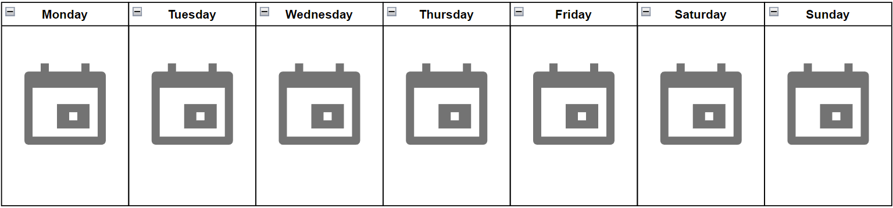

General CCI Study Groups
This page is dedicated to providing UNCC CCI students with the opportunity to find and connect with other students to form study groups. Study groups are available to all CCI students, and students can choose whether they want a more general study group, or a more class based stuudy group. Feel free to navigate through the various study group options, and don't forget to check out the preview of the upcoming weeks availability!
